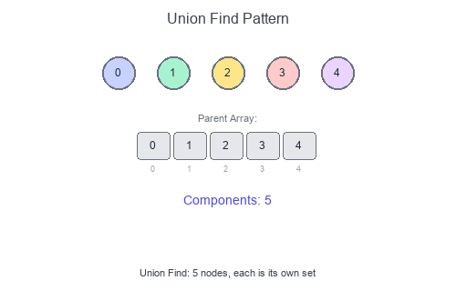

Introduction to Union Find Pattern
Union Find (Disjoint Set Union / DSU) is a data structure that tracks elements partitioned into disjoint sets. It supports two operations efficiently: Union (merge two sets) and Find (determine which set an element belongs to).
Visual Example
Union Find with Path Compression

Initially, each element is its own set. Union operations merge sets by connecting roots. Path compression flattens the tree during Find operations.
Core Operations
| Operation | Description | Optimized Time |
|---|---|---|
find(x) |
Find root/representative of x's set | ~O(1) amortized |
union(x, y) |
Merge sets containing x and y | ~O(1) amortized |
connected(x, y) |
Check if x and y in same set | ~O(1) amortized |
When to Use
- Dynamic connectivity queries.
- Finding connected components.
- Cycle detection in undirected graphs.
- Kruskal's minimum spanning tree.
- Accounts merge / friend circles.
- Grid problems (islands with union).
Key Optimizations
- Path Compression: During
find(), make each node point directly to root. - Union by Rank/Size: Attach smaller tree under larger tree's root.
Together, these achieve nearly O(1) amortized time per operation (technically O(α(n)) where α is the inverse Ackermann function).
Short Examples — Python
Basic Union Find
class UnionFind:
def __init__(self, n: int):
self.parent = list(range(n))
self.rank = [0] * n
def find(self, x: int) -> int:
if self.parent[x] != x:
self.parent[x] = self.find(self.parent[x]) # Path compression
return self.parent[x]
def union(self, x: int, y: int) -> bool:
"""Returns True if x and y were in different sets."""
root_x, root_y = self.find(x), self.find(y)
if root_x == root_y:
return False # Already connected
# Union by rank
if self.rank[root_x] < self.rank[root_y]:
root_x, root_y = root_y, root_x
self.parent[root_y] = root_x
if self.rank[root_x] == self.rank[root_y]:
self.rank[root_x] += 1
return True
def connected(self, x: int, y: int) -> bool:
return self.find(x) == self.find(y)
Union Find with Size Tracking
class UnionFindWithSize:
def __init__(self, n: int):
self.parent = list(range(n))
self.size = [1] * n
self.num_components = n
def find(self, x: int) -> int:
if self.parent[x] != x:
self.parent[x] = self.find(self.parent[x])
return self.parent[x]
def union(self, x: int, y: int) -> bool:
root_x, root_y = self.find(x), self.find(y)
if root_x == root_y:
return False
# Union by size
if self.size[root_x] < self.size[root_y]:
root_x, root_y = root_y, root_x
self.parent[root_y] = root_x
self.size[root_x] += self.size[root_y]
self.num_components -= 1
return True
def get_size(self, x: int) -> int:
return self.size[self.find(x)]
def count_components(self) -> int:
return self.num_components
Number of Connected Components
def count_components(n: int, edges: list[list[int]]) -> int:
uf = UnionFind(n)
for a, b in edges:
uf.union(a, b)
# Count unique roots
return len(set(uf.find(i) for i in range(n)))
# Or using the component counter:
def count_components_v2(n: int, edges: list[list[int]]) -> int:
uf = UnionFindWithSize(n)
for a, b in edges:
uf.union(a, b)
return uf.count_components()
Redundant Connection (Find cycle edge)
def find_redundant_connection(edges: list[list[int]]) -> list[int]:
"""Find the edge that creates a cycle."""
n = len(edges)
uf = UnionFind(n + 1) # 1-indexed
for a, b in edges:
if not uf.union(a, b):
return [a, b] # Already connected = cycle
return []
# Example: [[1,2], [1,3], [2,3]] → [2,3]
Number of Provinces (Friend Circles)
def find_circle_num(is_connected: list[list[int]]) -> int:
n = len(is_connected)
uf = UnionFind(n)
for i in range(n):
for j in range(i + 1, n):
if is_connected[i][j]:
uf.union(i, j)
return len(set(uf.find(i) for i in range(n)))
Accounts Merge
from collections import defaultdict
def accounts_merge(accounts: list[list[str]]) -> list[list[str]]:
email_to_id = {}
email_to_name = {}
uf = UnionFind(len(accounts) * 10) # Upper bound on emails
email_id = 0
# Assign IDs and union emails within same account
for account in accounts:
name = account[0]
first_email_id = None
for email in account[1:]:
if email not in email_to_id:
email_to_id[email] = email_id
email_to_name[email] = name
email_id += 1
if first_email_id is None:
first_email_id = email_to_id[email]
else:
uf.union(first_email_id, email_to_id[email])
# Group emails by root
groups = defaultdict(list)
for email, eid in email_to_id.items():
root = uf.find(eid)
groups[root].append(email)
# Format result
result = []
for root, emails in groups.items():
name = email_to_name[emails[0]]
result.append([name] + sorted(emails))
return result
Number of Islands (Union Find approach)
def num_islands_uf(grid: list[list[str]]) -> int:
if not grid:
return 0
rows, cols = len(grid), len(grid[0])
def get_id(r: int, c: int) -> int:
return r * cols + c
uf = UnionFind(rows * cols)
land_count = 0
for r in range(rows):
for c in range(cols):
if grid[r][c] == '1':
land_count += 1
# Union with adjacent land cells
for dr, dc in [(0, 1), (1, 0)]:
nr, nc = r + dr, c + dc
if 0 <= nr < rows and 0 <= nc < cols and grid[nr][nc] == '1':
if uf.union(get_id(r, c), get_id(nr, nc)):
land_count -= 1
return land_count
Graph Valid Tree
def valid_tree(n: int, edges: list[list[int]]) -> bool:
"""A valid tree has n-1 edges and is fully connected."""
if len(edges) != n - 1:
return False
uf = UnionFind(n)
for a, b in edges:
if not uf.union(a, b):
return False # Cycle detected
return True
Union Find vs DFS/BFS
| Aspect | Union Find | DFS/BFS |
|---|---|---|
| Dynamic edges | Excellent | Rebuild graph |
| Static components | Good | Also good |
| Online queries | O(1) per query | O(V+E) per query |
| Implementation | Moderate | Simple |
Common Pitfalls
- Forgetting path compression (performance degrades).
- Off-by-one with node indices (0-indexed vs 1-indexed).
- Not handling the "already connected" case in union.
- Using union-find for directed graphs (it's for undirected).